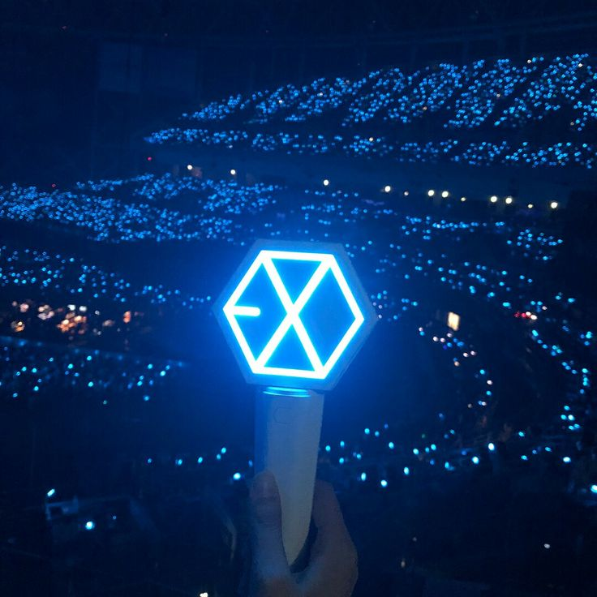
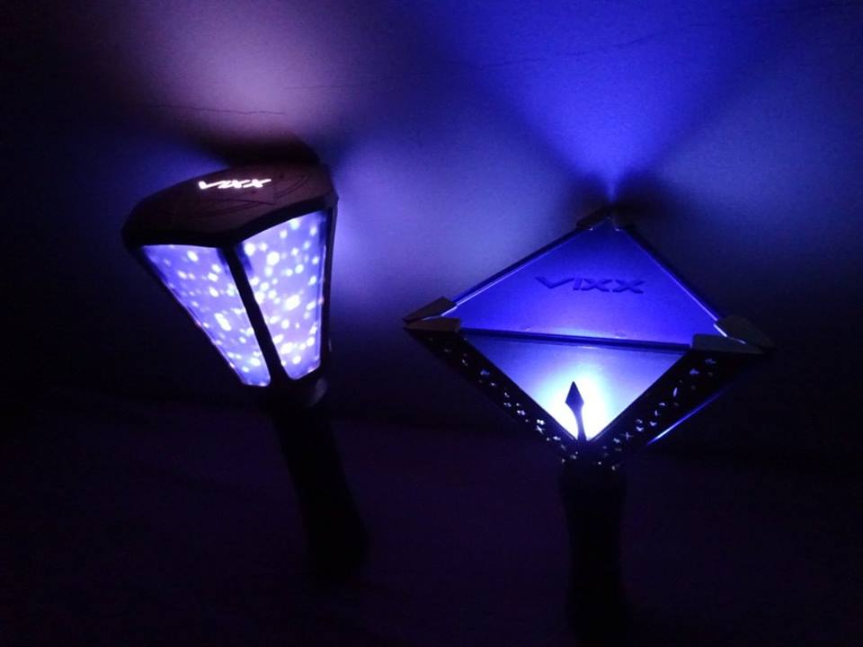
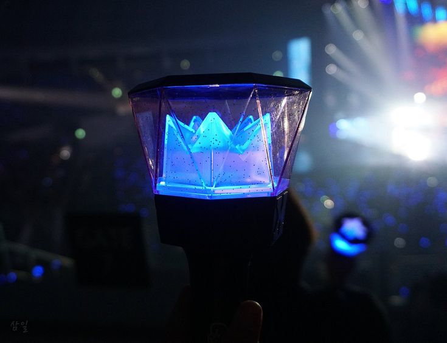
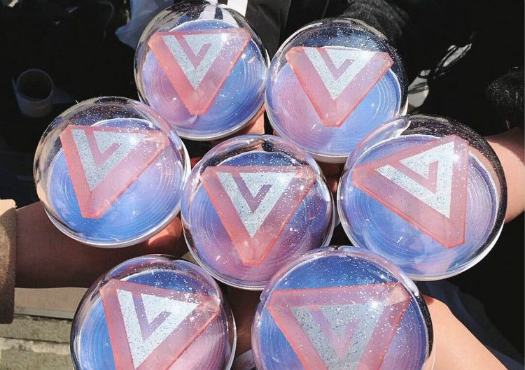
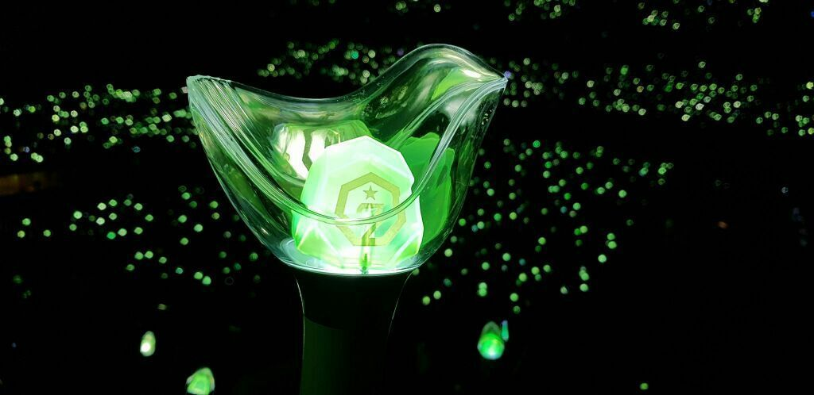
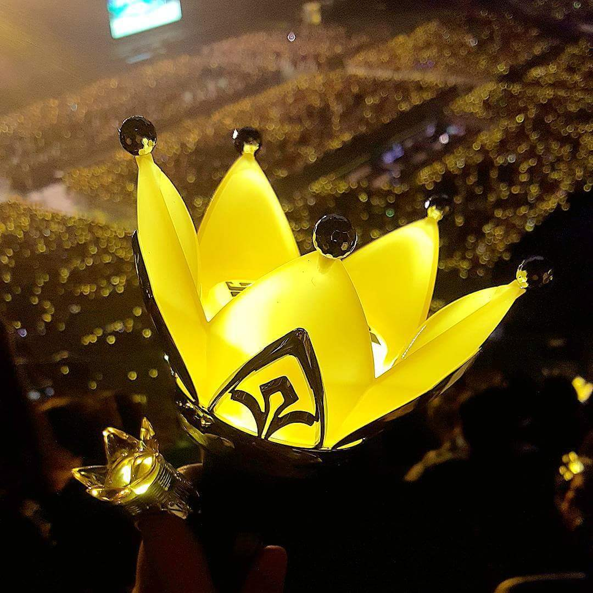
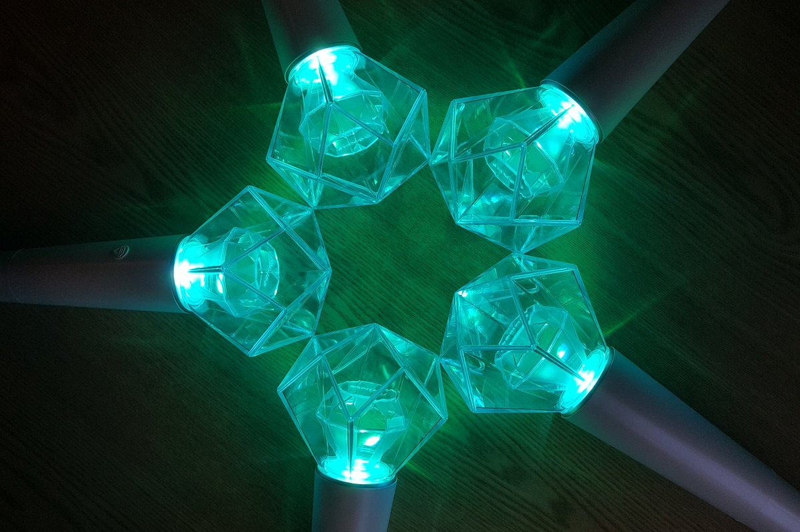
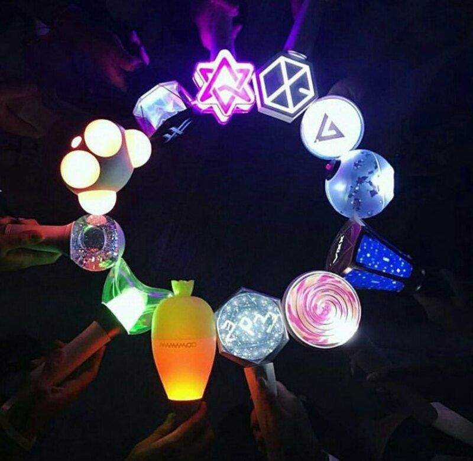

Фандомы
Фэндом, или фандом (от англ. fandom, букв. «сообщество фанатов») — субкультура, состоящая из поклонников (фанатов), характеризуется чувством сопереживания и товарищества с другими людьми, которые разделяют общий интерес.
Даже те, кто не особо увлекается k-pop, в курсе, что имена для своих групп айдолы придумывают не просто для красивости. В каждом названии кроется глубокий смысл. Было бы странно, если бы с тем же трепетом k-pop-звезды не относились и к своим фандомам. Но это лишь доказывает, с какой любовью и преданностью айдолы относятся к своим фанатам. Кроме этого каждому фандому сооответствует определенный цвет и официальный лайтстик, который каждый фанат использует на концерте, создавая невероятный океан света в поддержку любимой группе.
EXO и EXO-L

Приставка «L» к названию пришла из слова «love» — «любовь». И подразумевает
бесконечную любовь и преданность своих фанатов к группе. Кстати, такое имя фандому
дали сами SM Entertainment. У EXO-L есть даже свой официальный
девиз: «Мы едины! Мы ЕХО!», а своим цветом, правда, неофициально, они считают
серебряный.
TWICE и ONCE

Девочки дали такое название фандому сами, а смысл вот в чем: если фанаты
однажды (ONCE) полюбят группу, то айдолы будут любить их в два раза (TWICE)
больше. Кстати, официальными цветами фандома считаются абрикосовый и
неоново-пурпурный.
Red Velvet и ReVeluv

Еще одна коллаборация со словом «Love», айдолы из «Бархата» дают официальное
название своим фанатам — ReVeluv. С другой стороны, слово «reve» на французском
означает мечту — лишь благодаря фанатам мечты девушек сбылись. Фандомное имя
было официально присвоено на 1000-ый день после дебюта группы, а цвет решили
использовать пастельно-коралловый.
VIXX и Starlight

Фандом называется «Звездочки», потому что фанатов так много и каждый ярко-ярко
сияет в глазах айдолов. Официального цвета у фандома нет, но фанатам нравится
использовать жемчужно-золотой.
MONSTA X и Monbebe

Сначала может показаться, что фандомное имя Monbebe подразумевает перевод
«маленькие монстрики». Но на самом деле «mon» (в переводе c французского) означает
«мой». То есть дословно фандом называется «моя малышка».
SEVENTEEN и CARAT

Айдолы называют свой фандом CARAT (караты), подразумевая, что именно их
поклонники заставляют бриллианты SEVENTEEN сиять. Цвета выбрали очень
красивые — розовый кварц и лилово-голубой Serenity (Безмятежность).
GOT7 и iGOT7

Ходит поверье, что число «7» приносит удачу. И название фандома iGOT7 просто кричит
о том, что ты везунчик, раз стал фанатом этой группы, теперь удача точно тебя не
покинет. К тому же, если прочитать это название на корейском, то произношение будет
очень похоже на корейское слово «птенчик». Из-за этого на зеленых лайтстиках группы
нарисованы птички и на концертах айдолы часто так называют фанатов.
BTS и ARMY

Поскольку мальчики из BTS — пуленепробиваемые бойскауты, в название их фандома
тоже заложен глубокий смысл: состоя в АРМИ (этот термин является аббревиатурой
"ARMY", которую можно расшифровать, как "Adorable Represetatives Mc for Youth",
что можно перевести, как "Очаровательный представитель МС для молодежи".
Нужно отметить, что в рэперской тусовке MC считаются самой высшей ступенью
таланта и мастерства), ты поддерживаешь как BTS, так и
других фанатов группы. У фандома есть официальный герб, который является
отражением лого группы, а если их сложить вместе, то появится тот самый
пуленепробиваемый щит. Официальный цвет — фиолетовый.
PENTAGON и UNIVERSE

Все предельно просто: фандом назвали Universe, ведь для айдолов их фанаты — целая
вселенная. Официальный цвет PENTAGON выбрали один, но значимый:
UNINAVY (PENTAGON + UNIVERSE = UNINAVY).
BIGBANG и V.I.P

Четко и по существу — фандом гордо носит имя V.I.P., потому что каждый из
фанатов для группы «очень важная персона». Официального цвета нет, но на концертах
V.I.P. часто приносят черно-белые платки (вместо воздушных шаров) и желтые короны.
SHINee и Shawols

Название фанклуба: SHINee World. Это название первого альбома группы, но фанаты
называют себя Shawols, что является сокращением от SHINee World - Shya и Wol = Shawols.
Официальный цвет - лазурный.
Это одни из самых знаменитых групп разного поколения. С каждым годом в Корее формируются новые коллективы, которые так же разрабатывают свой собственный лайтстик и придумывают название фандома.
Это все становится возможным именно благодаря фанатам и их интересу к К-РОР направлению по всему миру. Так каждый из нас может почувствовать себя частью одной большой дружной семьи!
